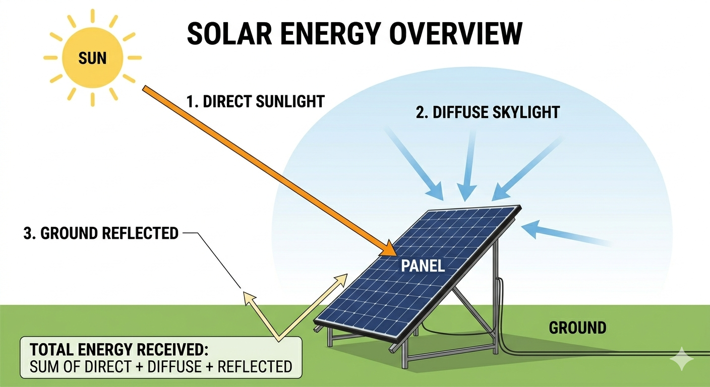
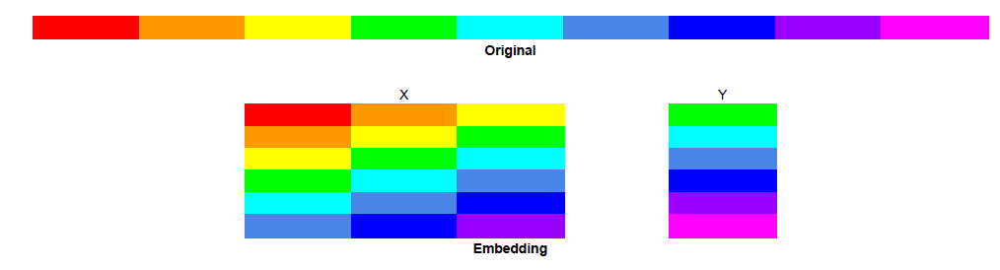
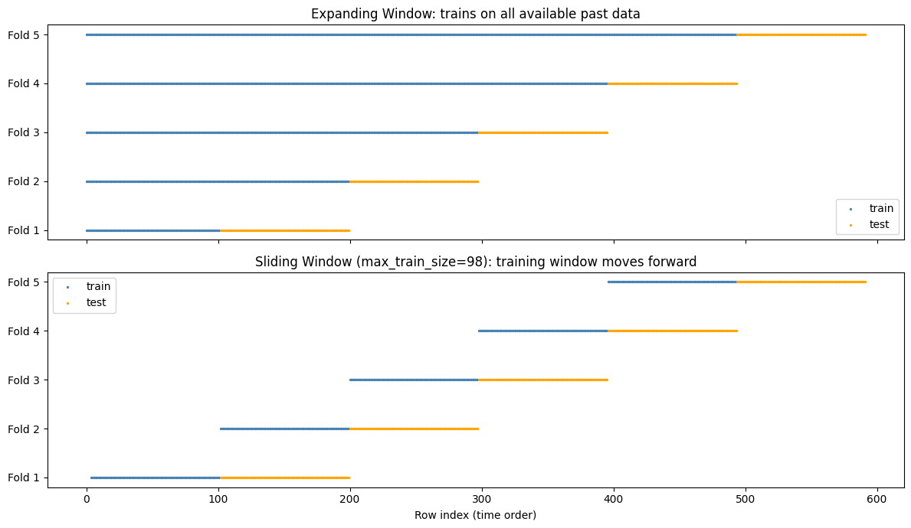
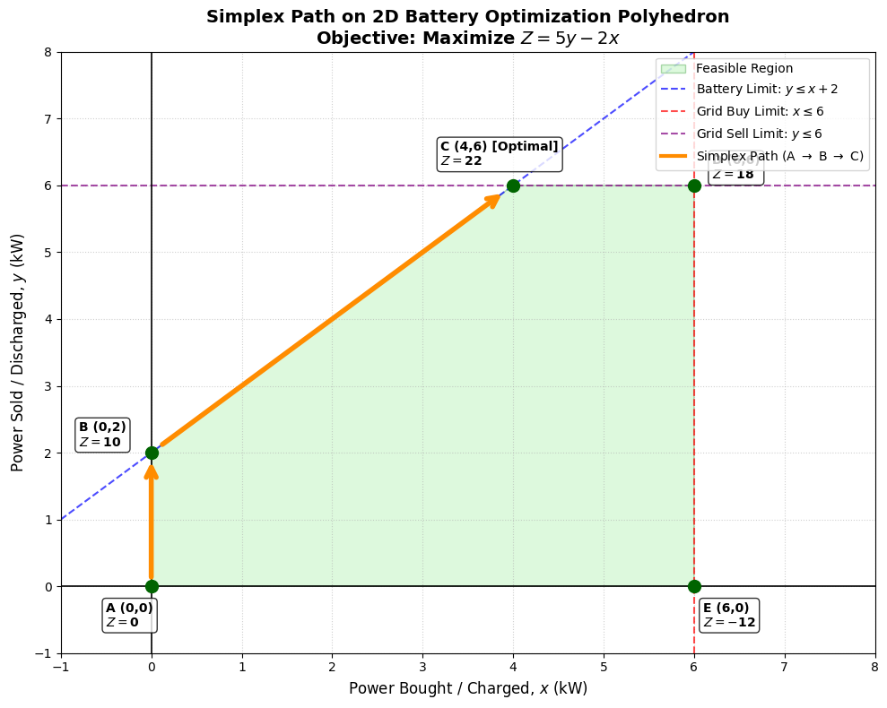
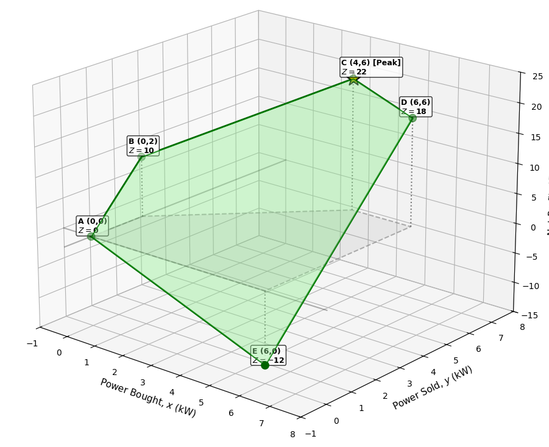

Digital Twins & AI
From Concept to Reality
Building Intelligent Environments for a Sustainable Future

Type this URL into your browser:
bit.ly/ie26tut4
Introduction
Myself: Gian Marco Paldino
Postdoctoral Researcher · Machine Learning Group, ULB · Ph.D. 2026
Research focus: multivariate time series — causal inference, forecasting, anomaly detection, and Digital Twins.
MLG-ULB — What We Do
Founded in 2004 by Prof. Gianluca Bontempi, is currently co-headed by him and Prof. Tom Lenaerts. MLG targets machine learning and behavioral intelligence research on time series analysis, big data mining, causal inference, network inference, decision-making models and behavioral analysis
The EDITS project (Enhancing DIgital TwinS with scalable and interpretable AI) — funded by WEL-T
The EDITS Project & WEL-T
- EDITS: Enhancing Digital Twins with Scalable & Interpretable AI.
- Made possible by funding from WEL-T.
- Our Goal: Move Digital Twins from academic buzzwords to deployed, AI-driven solutions in Energy, Mobility, and Manufacturing.
Agenda (2 Hours)
| 14:00 - 14:20 | Theory: The Digital Twin Architecture |
| 14:20 - 14:50 | Hands-on 1: The Physical Twin (Data Generation) |
| 14:50 - 15:00 | 10 minutes break |
| 15:00 - 15:20 | Hands-on 2: The Digital Brain (Machine Learning) |
| 15:20 - 16:00 | Hands-on 3: Closing the Loop (Optimization) |
Digital Twins
What is a Digital Twin?
- Not just a static 3D model.
- Sensing: Data updates the virtual model.
- Actuating: DT affects real-world decisions.
- Digital Shadow: green arrow only. (e.g.
- Digital Model: orange arrow only. (e.g. CAD tools)
The 5-Layer Architecture
- Generation: Sensors, IoT, Simulators
- Streaming: Kafka / Big Data
- Storage: Time-Series Databases
- Processing: Machine Learning & AI
- Decision: Dashboards & Optimization
Virtual Power Plants
Today's Use Case: The Virtual Power Plant
A Virtual Power Plant (VPP) is a cloud-based distributed power plant that aggregates the capacities of heterogeneous distributed energy resources (DERs) — solar panels, wind turbines, battery storage, and flexible loads — and coordinates them as a single, dispatchable unit visible to the grid operator.
- No single physical location — exists as software + communication layer.
- Compensates for the intermittency of renewables by pooling complementary assets.
- Key metric: keep supply = demand at all times (grid frequency = 50 Hz).
VPP — Under the Hood
Components
- ☀️ Solar PV panels
- 💨 Wind turbines
- 🔋 Battery storage (BESS)
- 🏭 Flexible industrial loads
- 🏠 Smart-meter households
What the DT does
- Forecasting: predict solar & wind output (LSTM, XGBoost)
- Scheduling: charge/discharge battery optimally (LP/MPC)
- Market participation: bid surplus into day-ahead markets
- Fault detection: anomaly detection on sensor streams
Why VPP is a Textbook Digital Twin
Sensing (Physical → Digital)
- Solar irradiance & wind speed → update forecast model
- Battery state-of-charge → update optimisation state
- Household consumption → update demand model
Actuating (Digital → Physical)
- Optimised schedule → commands inverters & BESS
- Market bid → triggers real energy transactions
- Fault alert → triggers maintenance crew
Both arrows active → true Digital Twin,
not
just a shadow or a model.
VPP — Real-World Deployments
Hands-on 01 - Data generation
In simple terms
We get weather data and use specialized libraries that convert this weather data into energy profiles for solar panels and wind turbines.
🌐 Weather Data Input
Temperature, irradiance, wind speed, humidity, cloud cover, etc. from weather stations or forecasts.
⚙️ Specialized Libraries
pvlib (solar), windpowerlib (wind), and others that model physics & efficiency.
⚡ Energy Profile Output
Predicted power output (kW/MW) for each asset at each time step—ready for optimization.
Solar Irradiance

Solar Irradiance
The sun's energy reaching a surface splits into three components that pvlib needs separately.
☀️ GHI — Global Horizontal Irradiance
Total solar radiation on a flat horizontal surface. GHI = DNI·cos(θ) + DHI. The "headline" number from weather stations.
🔆 DNI — Direct Normal Irradiance
Radiation arriving directly from the sun's disk, measured on a surface always perpendicular to it. Dominant on clear days. Strongly affected by tilt & azimuth.
🌫️ DHI — Diffuse Horizontal Irradiance
Scattered radiation from the rest of the sky dome (clouds, atmosphere). Does not depend on panel orientation — you always receive it.
Why all three? A tilted panel sees a different mix of direct, diffuse, and ground-reflected light. pvlib needs all three to compute what actually hits your panel.
How pvlib Works — The Model Chain
pvlib strings together a pipeline of physical models. Each step converts one quantity into the next:
The columns ghi, dni,
dhi, temp_air, wind_speed are the exact inputs steps
1–3 consume — that's why the names are mandatory.
PV System Parameters — Physical Meaning
Module
Inverter & Racking
Wind Power
Wind power follows a cubic law — small speed changes have a huge impact.
Key physics
What we model
3. Simulating Community Demand & Tariffs
Build a realistic load profile and dynamic price signal for downstream prediction.
Hands-on 02 - Training the Digital Brain 🧠
Predictive Modeling for the Digital Twin
Supported by the WEL Research Institute (WEL-T) - EDITS Project
1. Embedding: Time Series to Tabular
Standard ML models require independent rows to predict a target.

maxlags Parameter (d)
- Defines the lookback horizon of the model.
- Must balance historical context with data loss (each lag introduces NaNs at the beginning of the series).
- Lags must only look backward (using positive shifts like
shift(1)). - Any forward shift (e.g.,
shift(-1)) introduces future data into the current training row.
2. Feature Extraction
Condensing historical windows into compact statistical summaries.
- Rolling Mean: Captures the local smoothed trend level.
- Rolling Std: Quantifies recent volatility (useful for highly variable sources like wind).
- Rolling Min/Max: Captures recent local boundaries.
- Rolling operations must be right-aligned (using
center=False). - Centered windows look forward in time, violating temporal boundaries and causing severe validation leakage.
3. Feature Engineering
Injecting domain-specific physical and temporal structures into the model.
Linear features like Hour (0–23) hide temporal proximity (hour 23
and hour 0 are close, but numerically far).
We map these inputs to a 2D coordinate space using sine and cosine
transformations:
Hour_Sin = sin(2π·h/24), Hour_Cos = cos(2π·h/24)
Adding lags and rolling windows to every exogenous signal causes feature count
to balloon quickly.
We selectively include current physical drivers (like Global Horizontal
Irradiance, ghi) without lagging them, keeping the feature space
compact.
4. Time Series Cross-Validation (TSCV)
Evaluating models without violating the direction of time.

5. Normalized Mean Squared Error (NMSE)
Evaluating predictive skill relative to trivial averages.
NMSE = MSE / Var(y_true)
Normalizing by the variance of the target ground truth converts the error into a relative, scale-independent metric.
- NMSE > 1: The model performs worse than a simple historical mean forecast.
- NMSE ≈ 0: Near perfect alignment with reality.
- Equivalence:
1 - NMSErepresents the Coefficient of Determination ($R^2$).
6. Scaling Up & Recursive Forecasting
Extending predictions across multiple variables and long-term planning horizons.
Standard models predict only one step ahead ($t+1$). For multi-step horizons (e.g., $t+24$ for battery scheduling), we feed the predicted value at $t+1$ back into the lag array to predict $t+2$, iterating step-by-step.
Because recursive forecasting uses predicted values as inputs for subsequent timesteps, any error introduced early in the chain propagates and compounds as the forecast horizon expands.
Hands-on 03 - Optimization
Energy Arbitrage
The same principle as buying low and selling high — applied to electricity.
Optimization: simplex idea
Setting up the search space before we visualize it
The Mathematical Setup
x = Power bought (Costs $2/kW)y = Power sold (Earns $5/kW)
Maximize profit
Z = 5y - 2x
- Grid connection limit:
x ≤ 6andy ≤ 6 - Physical battery capacity:
y ≤ x + 2(SOC) - No negative power:
x ≥ 0, y ≥ 0
The Optimization Logic
Key fact: because the objective is linear, the optimum always sits at a corner of this shape.
Visualizing the constraints

Visualizing the profit

What is PuLP, really?
prob += ...),
then translates them into a standard mathematical format.prob.solve() calls CBC, waits for it to finish, and reads
the
result back into your Python variables via .varValue.pulp.LpStatus[status] tells you what CBC reported:
Optimal, Infeasible, or Unbounded.
Our case in Math
Our case in Python
prob += pulp.lpSum([P_buy[t]*price_buy_f[t] - P_sell[t]*price_sell_f[t] for t in times])
prob += (pv_f[t] + wind_f[t] + P_buy[t] + P_discharge[t] == demand_f[t] + P_sell[t] + P_charge[t])
prob += (SoC[t] == SoC[t-1] + (P_charge[t] * eta) - (P_discharge[t] / eta))
Ok but... 24 hours?
PuLP doesn't solve hour by hour. It sees the whole 24-hour problem as one big system of equations.Where to go from here
Thank you for your attention
For slides; code; and paper